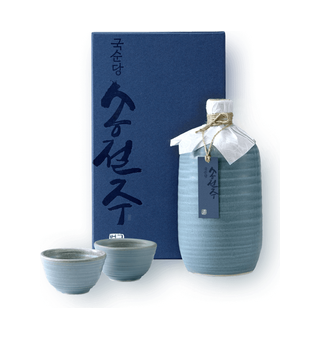
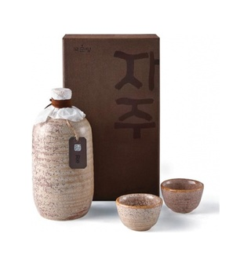
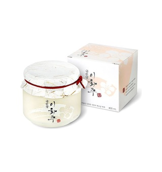
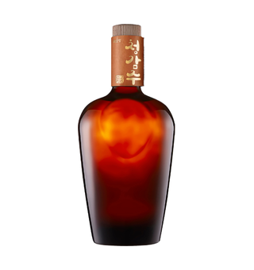
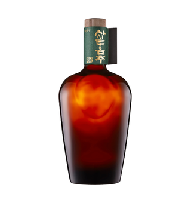

국순당의
국순당의
HOME > 제품소개 > 법고창신
BEOPGOCHANGSIN
법고창신,
천년 전 술을 다시 빚다
한잔 술에 담긴 선조의 지혜, 문헌으로만 전해 온 천년 전 술이
국순당 법고창신으로 다시 태어났습니다.
문헌에서 찾아낸 우리술
- 600여문헌 속 우리술 가짓수
- 24종국순당이 되살린 우리술
- 2008첫 복원 연도 (창포주)
되살린 다섯 가지 술
문헌에 적힌 그대로 빚고, 오늘의 입맛에 맞게 다듬었습니다.
-

550ml · 700ml · 16.5도- 소나무마디 고은 물 두말을 메밥에 주어가며 푹 내어 차게 식힌 후 술밑을 고루 섞어 소나무마디 달인 건지를 항아리 밑에 넣는다.규합총서 · 1809년
- 소나무가 가진 상징적 의미로 옛 선비들이 각별히 즐기던 술입니다.
- 소나무 마디인 송절로 빚어 독특한 솔향기와 특유의 쌉싸름한 맛이 뛰어납니다.
-

550ml · 700ml · 17도- 좋은 청주 1병에 황납 2전, 후추 간 것 1전을 넣고 병 입구를 단단히 봉한 다음, 그 위에 젖은 쌀 한 줌을 얹어 중탕해서 끓인다. 주찬 · 1800년대 초
- 고려시대부터 널리 알려진 명주로, 동의보감 「탕액편」에도 나오는 술입니다.
- 맑은 술에 꿀과 후추를 넣고 중탕해 빚어 매콤하면서도 시원한 풍미가 독특합니다.
-

400ml · 700ml · 12.5도- 멥쌀 1말을 여러 번 씻어서 곱게 가루를 내어 체로 거듭 쳐서 구멍떡을 빚는다. 누룩 1되 3홉을 섞어서 매우 힘껏 치대어 항아리에 빚어 넣는다. 수운잡방 · 1500년대 초
- 배꽃 필 무렵에 담근다고 해서 이름 붙은 고려시대의 최고급 탁주입니다.
- 색이 배꽃처럼 희고, 숟가락으로 떠먹을 수 있을 만큼 걸쭉하고 부드럽습니다.
-

550ml · 600ml · 11.5도- 찹쌀 1말로 밥을 찌고 가루 누룩 5홉과 물을 섞지 않은 좋은 청주 1병 반을 섞어 빚는다. 그 달기는 꿀과 같다. 수운잡방 · 1500년대 초
- 빛깔이 맑고 깨끗하며 단맛이 좋아 붙여진 이름입니다.
- 술로 빚는 술로, 도수가 높지 않고 순해 누구나 편하게 마실 수 있습니다.
-

550ml · 600ml · 18도- 백미 1말을 깨끗이 씻어 가루 내어 더운 물 3말에 죽을 쑤고, 누룩가루 1되 반과 섞어 빚는다. 술 만드는 법 · 1800년대 말
- 선조들이 사시사철 빚어 친구들과 통하여 마셨던 술입니다.
- 높은 도수에도 부드러운 감칠맛이 특징입니다.